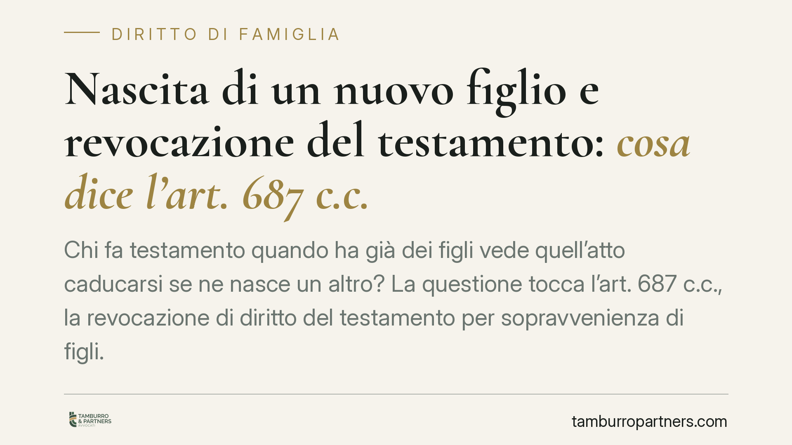

Nascita di un nuovo figlio e revocazione del testamento: cosa dice l'art. 687 c.c.
Chi fa testamento quando ha già dei figli vede quell'atto caducarsi se ne nasce un altro? La questione tocca l'art. 687 c.c., la revocazione di diritto del testamento per sopravvenienza di figli. La risposta non è scontata e divide dottrina e giurisprudenza. Vediamo cosa prevede la norma e cosa può fare il figlio che si ritiene leso.

Il caso tipo
Un genitore redige testamento quando ha già uno o più figli. Anni dopo nasce un ulteriore figlio, magari da una diversa relazione, oppure riconosciuto in un momento successivo. Quel testamento, pensato in un assetto familiare diverso, resta valido? Oppure cade automaticamente per effetto della nuova nascita?
È una domanda che si pone con frequenza negli studi legali, perché intreccia il diritto successorio con la dimensione più intima dei rapporti familiari. La soluzione, però, non è lineare come si potrebbe pensare.
Inquadramento normativo
Il riferimento è l'art. 687 del codice civile, rubricato "Revocazione per sopravvenienza di figli". La norma stabilisce che il testamento fatto da chi non aveva o ignorava di avere figli o discendenti al tempo del testamento è revocato di diritto per l'esistenza o la sopravvenienza di un figlio o discendente del testatore.
La ratio è chiara: la legge presume che chi testa senza avere (o senza sapere di avere) figli non abbia potuto tenere conto di loro nelle proprie disposizioni. La successiva nascita o scoperta di un figlio fa venire meno il presupposto psicologico dell'atto, che perde automaticamente efficacia ("di diritto", cioè senza bisogno di impugnazione).
Il nodo interpretativo riguarda il caso diverso: quello di chi, al momento del testamento, aveva già figli e ne era consapevole, e vede poi nascere un ulteriore figlio. Qui la lettera dell'art. 687 c.c. non offre una copertura evidente, perché presuppone l'assenza o l'ignoranza di figli. Un orientamento tradizionale esclude in tal caso la revocazione automatica, ritenendo che il testatore abbia già fatto le proprie scelte in un contesto in cui la presenza di prole era nota. Altra parte della dottrina, però, valorizza la finalità protettiva della norma e ne sostiene un'applicazione più estesa anche al figlio ulteriore.
La questione, dunque, non è pacifica. Va presentata per quello che è: un tema controverso, su cui non esiste una soluzione univoca e definitivamente consolidata.
Il profilo costituzionale e la riforma della filiazione
Il dibattito si è arricchito dopo la riforma della filiazione (L. 219/2012 e d.lgs. 154/2013), che ha sancito l'unicità dello stato di figlio, eliminando ogni distinzione di trattamento tra figli nati dentro e fuori dal matrimonio.
In questa prospettiva, letta anche alla luce dell'art. 30 della Costituzione — che impone pari tutela a tutti i figli — una lettura restrittiva dell'art. 687 c.c. solleva interrogativi. Perché il figlio sopravvenuto a chi non aveva prole dovrebbe godere della revocazione automatica, mentre il figlio ulteriore no? È un punto di tensione sistematica che alimenta il contenzioso e le riflessioni dottrinali.
Implicazioni pratiche
Per chi si trova in questa situazione, la distinzione decisiva è tra revocazione automatica e azione di riduzione.
Se opera la revocazione di diritto (figlio sopravvenuto a chi non aveva o ignorava figli), il testamento è privo di efficacia e la successione si apre secondo le regole legittime.
Se invece la revocazione non opera — come secondo l'orientamento tradizionale nel caso del figlio ulteriore — il testamento resta valido. Il figlio che si ritenga pretermesso o leso nella propria quota di legittima (la parte di eredità che la legge riserva ai più stretti congiunti) non può far cadere l'intero atto: può solo agire in riduzione delle disposizioni che eccedono la quota disponibile.
Sui termini occorre precisione. L'azione di riduzione si prescrive in dieci anni, ma la decorrenza cambia: secondo la giurisprudenza di legittimità (Cass. Sez. Un. n. 20644/2004), per il legittimario totalmente pretermesso — cioè escluso del tutto dal testamento — il termine decorre dall'apertura della successione; per il legittimario che abbia comunque ricevuto qualcosa (legittimario leso), la decorrenza è legata all'accettazione dell'eredità da parte dei chiamati.
Cosa fare in concreto
- Verificate la cronologia familiare. Ricostruite con precisione quando è stato redatto il testamento e quali figli il testatore avesse, o sapesse di avere, in quel momento: è il dato che discrimina tra revocazione automatica e semplice lesione di legittima.
- Non date per scontata la revoca. Se il testatore aveva già figli noti, l'applicazione dell'art. 687 c.c. è controversa: fate valutare il caso prima di assumere che il testamento sia caduto.
- Calcolate la quota di legittima. Quantificate la riserva spettante a ciascun figlio e verificate se le disposizioni testamentarie la intaccano.
- Monitorate i termini. Individuate il dies a quo corretto della prescrizione decennale, distinguendo tra pretermissione e lesione, per non perdere l'azione di riduzione.
- Aggiornate il testamento alla nascita di nuovi figli. Chi redige disposizioni di ultima volontà dovrebbe rivederle a ogni mutamento significativo dell'assetto familiare.
Contributo informativo a cura di Tamburro & Partners - Avv. Giuseppe Tamburro. Non costituisce parere legale.
Ogni famiglia ha il suo equilibrio.
Separazione, divorzio, affidamento, assegno: se vuoi un confronto riservato su una specifica situazione, scrivi allo studio. Ti rispondiamo entro un giorno lavorativo.